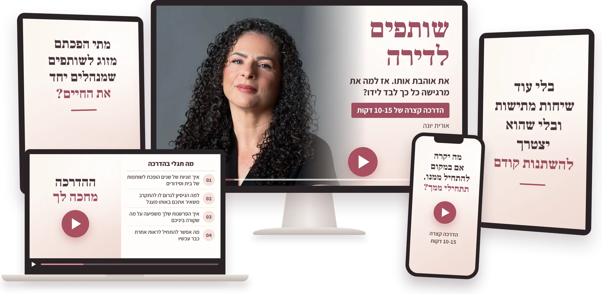
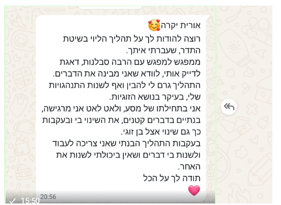

לנשים שנמצאות בזוגיות ארוכה, אוהבות את בן הזוג שלהן, אבל כבר לא רוצות להרגיש לבד לידו
איך להבין מה באמת יוצר את המרחק ביניכם, ולחזור להרגיש נראית, חשובה ובטוחה בתוך הקשר
בלי עוד שיחות מתישות
ובלי שהוא יצטרך להשתנות קודם

הדרכה קצרה של 10-15 דקות לנשים שמרגישות שהזוגיות הפכה עם השנים ליותר בית, ילדים וסידורים...
ופחות "אנחנו".
ערב, כל אחד בטלפון שלו.
רוב השיחות הן על הילדים, הקניות ומה צריך לעשות מחר.
וכשאת מנסה לפתוח משהו קצת יותר עמוק...
זה נגמר ב"בסדר", "לא יודע" או בשקט.
ואז עולה המחשבה:
"איך יכול להיות שאני חיה איתו שנים... ועדיין מרגישה לבד?"
והקטע הכי מתסכל?
שככל שאת מנסה להתקרב יותר...
לפעמים הוא דווקא נסגר יותר.
ויש סיבה לזה.
ואת זה תגלי בהדרכה:
- למה זוגיות של שנים יכולה להפוך בלי ששמים לב לשותפות של בית וסידורים
- למה דווקא הניסיון שלך לגרום לו לדבר ולהתקרב יכול להשאיר אתכם באותו מעגל
- איך הפרשנות שלך למה שהוא עושה משפיעה על מה שקורה ביניכם
- ומה אפשר להתחיל לראות אחרת כבר עכשיו, גם בלי שהוא יעבור איתך תהליך

את לא צריכה לפתור עכשיו את כל הבעיות בזוגיות.
את רק צריכה להתחיל להבין מה באמת קורה ביניכם.
השאירי פרטים וקבלי גישה להדרכה.
אם עוד לא הספקנו להכיר, נעים מאוד,קוראים לי אורית יונה.
ואני מכירה מקרוב את התחושה הזאת
של להסתכל על הזוגיות שלך ולחשוב:
"יש לנו כל כך הרבה...
אז למה משהו עדיין חסר לי?"
אחרי שנים שבהן בנינו בית,
משפחה וקריירה,
בשנת 2022 החיים שלי נעצרו כשחליתי.
ופתאום היה לי ברור שאני לא מוכנה
לחזור לאותם חיים שבהם
אנחנו בעיקר מתפעלים הכול יחד,
בזמן שהחיים פשוט קורים לנו.
רציתי יותר.
אז התחלתי לחקור, ללמוד אימון רגשי,
וגם לעבור בעצמי תהליך מהצד השני.
ושם נפל לי אסימון ששינה עבורי הרבה:
אני לא יכולה לשנות את בן הזוג שלי.
אבל אני כן יכולה להבין
מי אני בתוך הזוגיות,
מה מפעיל אותי,
ואיך אני משפיעה על הדינמיקה בינינו.
עם הזמן הפכתי
את הדרך האישית הזאת למקצוע.
והיום אני עוזרת לנשים
בזוגיות ארוכת שנים
להבין מה קורה להן בתוך הקשר,
ולצאת מהתחושה שהן חיות
עם בן הזוג שלהן כמו "שותפים לדירה".
וזו בדיוק הסיבה שיצרתי את ההדרכה הזאת.
כדי לעזור לך לראות למה נוצר המרחק,
למה אותן שיחות חוזרות שוב ושוב
לא באמת מקרבות,
ומה את יכולה להתחיל להבין אחרת
כבר עכשיו.
בלי לחכות שהוא ישתנה קודם.
אם משהו ממה שקראת כאן מרגיש לך מוכר...
אני מזמינה אותך לצפות בהדרכה.
היא קצרה, פשוטה, ונועדה לתת לך דבר אחד חשוב:
להתחיל להבין מה באמת קורה ביניכם, ומה נמצא בידיים שלך.
כן, אני רוצה לראות את ההדרכה